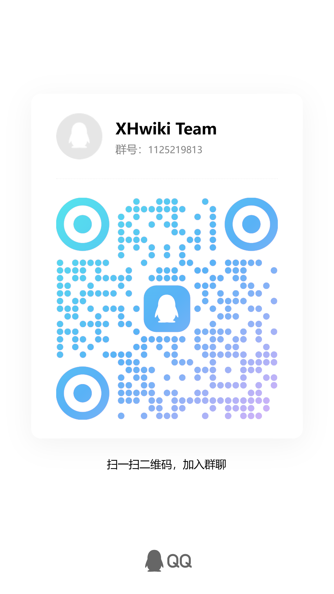

欢迎来到星海wiki！
她真好看。 ——Luoah
XHwiki，即星海wiki，是由Luoah制作的wiki网站。 这里收录南京郑和外国语学校星海班(即2025级2班)的各种梗知识、人物、 以及各种语录……
附：即2026.10.1起，XHwiki使用AES针对部分用户加密限制访问，如要使用本网站请联系管理员获取账号（权限依据你使用网站的行为及你的日常人品给予）。因此部分账号对部分页面访问受限（即便你拥有账号，权限依然存在层级）。
制作团队
策划：Luoah
设计：Luoah
代码：Luoah
文本：Luoah
美工：Luoah
运营：Luoah
发行：Luoah
宣传：Luoah
Luoah真是太强了！
联系我们
如果您有合理的意见，我们非常欢迎您为我们XHwiki的发展建言献策。
当然，您也可以大胆提出不合理的问题，这样您就可以出现在Luoah的黑名单中名垂浅屎，并且Luoah也不会改。
如果您提出的意见足够有价值、有意义，我们的团队将非常欢迎您的加入！

附：若要联系Luoah，请打开Luoah的介绍以查看。
注：XHwiki Team QQ群已禁止通过搜索群号添加，如有特别情况，请扫描二维码添加。
声明
1.我们不反对使用本wiki了解星海班的梗并使用，但我们反对使用这些梗恶意攻击他人。
2.我们仅是对这些梗或人做出说明与解释，没有任何倾向，请勿过度解读。
3.本网站一周至少更新5次，周三统一维护服务器，因此不建议您周中频繁访问，Luoah也是学生，更新较慢见谅。
4.禁止看完梗之后嘲笑同学(尤其是Luoah)，否则Luoah将会使用技术手段，将你的主页换成暗网。
5.禁止看完第4条后故意激怒Luoah，并且说第4条是奖励。
6.禁止问Luoah要暗网网址，Luoah没有。
7.禁止跟Luoah分享暗网网址，Luoah不想看。
致谢
我怀念的 是无话不说
我怀念的 是一起做梦
我怀念的 是无言感动
我怀念的 是永远炽热
——孙燕姿《我怀念的》
感谢Henson提供部分灵感与思路支持。
感谢Henson、Milson、响彻未来、Goldenfish参与公测并提供意见。
感谢lris在我的创作途中给予我的激励与支持。
感谢Bilibili 8047-的教学。
感谢Github提供的云存储与服务器支持。
感谢mkdocs的wiki模板。
开源项目
感谢Github为我们提供的支持，我们制作团队为创造更好的开源环境，公布我们的源码仓库。
https://github.com/Luoah-ivy/XHwiki/tree/gh-pages
友情链接
https://nflsoi.cc:20035/
https://weibo.com/u/5994952329
附：
.cc结尾的网站都是色情网站。 ——Milson
南外信息学网站就是.cc结尾。 ——Luoah